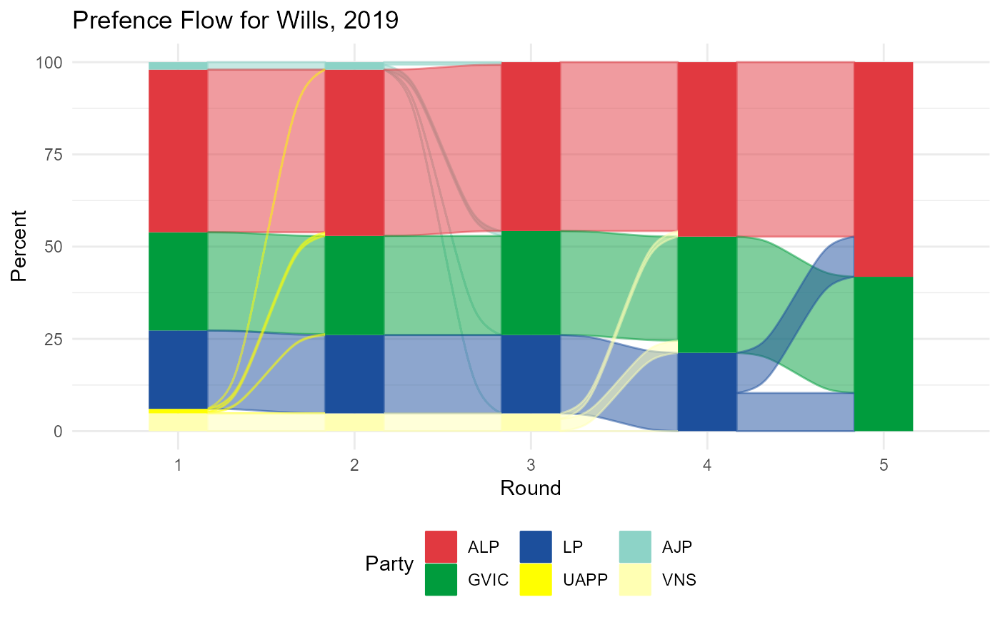
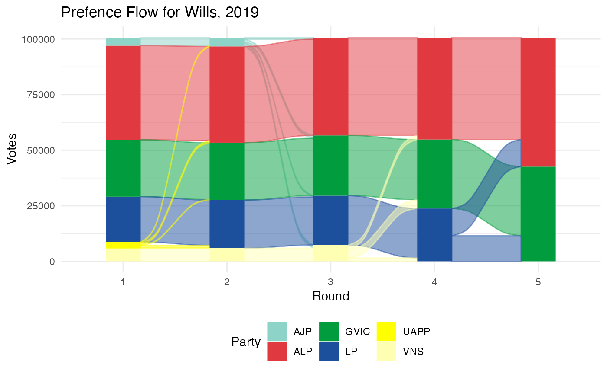
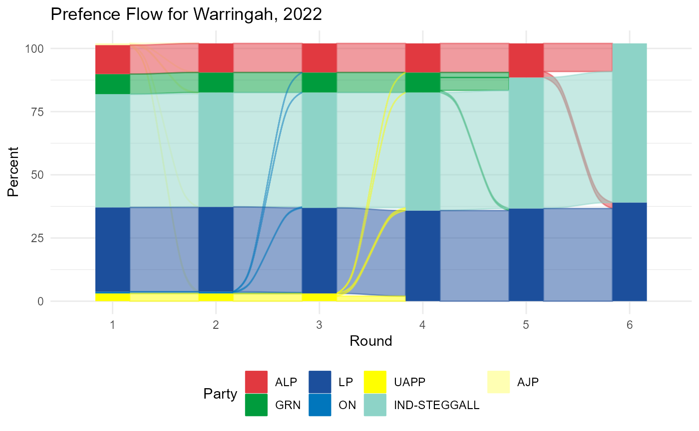
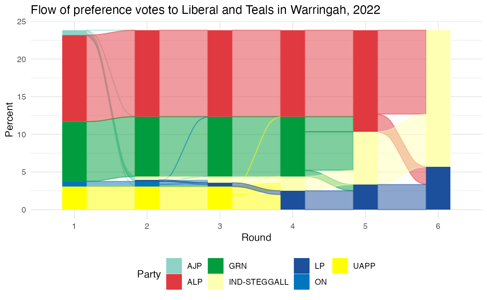
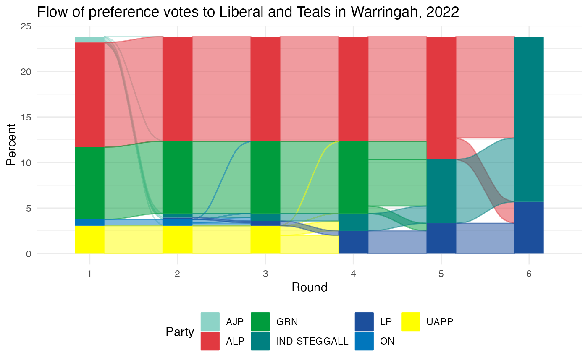

House of Representatives - How to read Preference Flows
Carlos YANEZ SANTIBANEZ
2022-11-08
house_preference_flow.Rmdauspol includes two functions to interact with the preference distribution data:
- get_house_preferences()
- house_preference_flow_data()
- house_preference_flow_plot()
What is this?
If you are unfamiliar with the Australian electoral system and preferential voting, please look at this (explainer)[https://www.aec.gov.au/learn/preferential-voting.htm#:~:text=Australian%20federal%20elections%20use%20a,the%20white%20ballot%20paper%20(Senate)] before proceeding.
Getting the data
get_house_preferences() - provides an interface to access preference flows for a particular division (electorate) on a given year, as published in the AEC’s website . For instance:
get_house_preferences("Wills",2019)
#> # A tibble: 60 × 13
#> Year StateAb Divis…¹ Divis…² Count…³ Ballo…⁴ Candi…⁵ Surname GivenNm PartyAb
#> <dbl> <chr> <int> <chr> <int> <int> <int> <chr> <chr> <chr>
#> 1 2019 VIC 234 Wills 0 1 32688 MILES Christ… AJP
#> 2 2019 VIC 234 Wills 0 1 32688 MILES Christ… AJP
#> 3 2019 VIC 234 Wills 0 2 32398 BOLTON Susann… VNS
#> 4 2019 VIC 234 Wills 0 2 32398 BOLTON Susann… VNS
#> 5 2019 VIC 234 Wills 0 3 33251 KILLIN Peter … LP
#> 6 2019 VIC 234 Wills 0 3 33251 KILLIN Peter … LP
#> 7 2019 VIC 234 Wills 0 4 32657 PULFORD Adam R… GVIC
#> 8 2019 VIC 234 Wills 0 4 32657 PULFORD Adam R… GVIC
#> 9 2019 VIC 234 Wills 0 5 32329 VENKAT Manju UAPP
#> 10 2019 VIC 234 Wills 0 5 32329 VENKAT Manju UAPP
#> # … with 50 more rows, 3 more variables: PartyNm <chr>, CalculationType <chr>,
#> # CalculationValue <dbl>, and abbreviated variable names ¹DivisionId,
#> # ²DivisionNm, ³CountNum, ⁴BallotPosition, ⁵CandidateIdResults can be also retrieved disaggregated by polling place:
get_house_preferences("Wills",2019,aggregation = FALSE) |> head(10)
#> # A tibble: 10 × 16
#> Year StateAb DivisionId Divisi…¹ PPId PPNm Count…² Ballo…³ Candi…⁴ Surname
#> <dbl> <chr> <int> <chr> <int> <chr> <int> <int> <int> <chr>
#> 1 2019 VIC 234 Wills 0 ABSE… 0 1 32688 MILES
#> 2 2019 VIC 234 Wills 0 ABSE… 0 1 32688 MILES
#> 3 2019 VIC 234 Wills 0 ABSE… 0 1 32688 MILES
#> 4 2019 VIC 234 Wills 0 ABSE… 0 1 32688 MILES
#> 5 2019 VIC 234 Wills 0 ABSE… 0 2 32398 BOLTON
#> 6 2019 VIC 234 Wills 0 ABSE… 0 2 32398 BOLTON
#> 7 2019 VIC 234 Wills 0 ABSE… 0 2 32398 BOLTON
#> 8 2019 VIC 234 Wills 0 ABSE… 0 2 32398 BOLTON
#> 9 2019 VIC 234 Wills 0 ABSE… 0 3 33251 KILLIN
#> 10 2019 VIC 234 Wills 0 ABSE… 0 3 33251 KILLIN
#> # … with 6 more variables: GivenNm <chr>, PartyAb <chr>, PartyNm <chr>,
#> # SittingMemberFl <chr>, CalculationType <chr>, CalculationValue <dbl>, and
#> # abbreviated variable names ¹DivisionNm, ²CountNum, ³BallotPosition,
#> # ⁴CandidateIdIt is also possible to filter by Polling Place Name (PPNm in the source):
get_house_preferences("Wills",2019, polling_places=c("ABSENT"),aggregation = FALSE) |> head(10)
#> # A tibble: 10 × 16
#> Year StateAb DivisionId Divisi…¹ PPId PPNm Count…² Ballo…³ Candi…⁴ Surname
#> <dbl> <chr> <int> <chr> <int> <chr> <int> <int> <int> <chr>
#> 1 2019 VIC 234 Wills 0 ABSE… 0 1 32688 MILES
#> 2 2019 VIC 234 Wills 0 ABSE… 0 1 32688 MILES
#> 3 2019 VIC 234 Wills 0 ABSE… 0 1 32688 MILES
#> 4 2019 VIC 234 Wills 0 ABSE… 0 1 32688 MILES
#> 5 2019 VIC 234 Wills 0 ABSE… 0 2 32398 BOLTON
#> 6 2019 VIC 234 Wills 0 ABSE… 0 2 32398 BOLTON
#> 7 2019 VIC 234 Wills 0 ABSE… 0 2 32398 BOLTON
#> 8 2019 VIC 234 Wills 0 ABSE… 0 2 32398 BOLTON
#> 9 2019 VIC 234 Wills 0 ABSE… 0 3 33251 KILLIN
#> 10 2019 VIC 234 Wills 0 ABSE… 0 3 33251 KILLIN
#> # … with 6 more variables: GivenNm <chr>, PartyAb <chr>, PartyNm <chr>,
#> # SittingMemberFl <chr>, CalculationType <chr>, CalculationValue <dbl>, and
#> # abbreviated variable names ¹DivisionNm, ²CountNum, ³BallotPosition,
#> # ⁴CandidateIdBuild on top of the basic function, preference_flow_data() - provides an interface to access preference flows for a particular division (electorate) on a given year. This function returns a list, in which each element is a data frame with the results for each counting round. In its most basic use:
house_preference_flow_data(division = "Wills", year=2019)
#> $`Round 0`
#> # A tibble: 6 × 15
#> Year StateAb Divisi…¹ Divis…² Count…³ Ballo…⁴ Candi…⁵ Surname GivenNm PartyAb
#> <dbl> <chr> <int> <chr> <int> <int> <int> <chr> <chr> <chr>
#> 1 2019 VIC 234 Wills 0 6 32350 KHALIL Peter ALP
#> 2 2019 VIC 234 Wills 0 4 32657 PULFORD Adam R… GVIC
#> 3 2019 VIC 234 Wills 0 3 33251 KILLIN Peter … LP
#> 4 2019 VIC 234 Wills 0 2 32398 BOLTON Susann… VNS
#> 5 2019 VIC 234 Wills 0 1 32688 MILES Christ… AJP
#> 6 2019 VIC 234 Wills 0 5 32329 VENKAT Manju UAPP
#> # … with 5 more variables: PartyNm <chr>, `Preference Count` <dbl>,
#> # `Transfer Count` <dbl>, RoundPosition <int>, Last <lgl>, and abbreviated
#> # variable names ¹DivisionId, ²DivisionNm, ³CountNum, ⁴BallotPosition,
#> # ⁵CandidateId
#>
#> $`Round 1`
#> # A tibble: 5 × 15
#> Year StateAb Divisi…¹ Divis…² Count…³ Ballo…⁴ Candi…⁵ Surname GivenNm PartyAb
#> <dbl> <chr> <int> <chr> <int> <int> <int> <chr> <chr> <chr>
#> 1 2019 VIC 234 Wills 1 6 32350 KHALIL Peter ALP
#> 2 2019 VIC 234 Wills 1 4 32657 PULFORD Adam R… GVIC
#> 3 2019 VIC 234 Wills 1 3 33251 KILLIN Peter … LP
#> 4 2019 VIC 234 Wills 1 2 32398 BOLTON Susann… VNS
#> 5 2019 VIC 234 Wills 1 1 32688 MILES Christ… AJP
#> # … with 5 more variables: PartyNm <chr>, `Preference Count` <dbl>,
#> # `Transfer Count` <dbl>, RoundPosition <int>, Last <lgl>, and abbreviated
#> # variable names ¹DivisionId, ²DivisionNm, ³CountNum, ⁴BallotPosition,
#> # ⁵CandidateId
#>
#> $`Round 2`
#> # A tibble: 4 × 15
#> Year StateAb Divisi…¹ Divis…² Count…³ Ballo…⁴ Candi…⁵ Surname GivenNm PartyAb
#> <dbl> <chr> <int> <chr> <int> <int> <int> <chr> <chr> <chr>
#> 1 2019 VIC 234 Wills 2 6 32350 KHALIL Peter ALP
#> 2 2019 VIC 234 Wills 2 4 32657 PULFORD Adam R… GVIC
#> 3 2019 VIC 234 Wills 2 3 33251 KILLIN Peter … LP
#> 4 2019 VIC 234 Wills 2 2 32398 BOLTON Susann… VNS
#> # … with 5 more variables: PartyNm <chr>, `Preference Count` <dbl>,
#> # `Transfer Count` <dbl>, RoundPosition <int>, Last <lgl>, and abbreviated
#> # variable names ¹DivisionId, ²DivisionNm, ³CountNum, ⁴BallotPosition,
#> # ⁵CandidateId
#>
#> $`Round 3`
#> # A tibble: 3 × 15
#> Year StateAb Divisi…¹ Divis…² Count…³ Ballo…⁴ Candi…⁵ Surname GivenNm PartyAb
#> <dbl> <chr> <int> <chr> <int> <int> <int> <chr> <chr> <chr>
#> 1 2019 VIC 234 Wills 3 6 32350 KHALIL Peter ALP
#> 2 2019 VIC 234 Wills 3 4 32657 PULFORD Adam R… GVIC
#> 3 2019 VIC 234 Wills 3 3 33251 KILLIN Peter … LP
#> # … with 5 more variables: PartyNm <chr>, `Preference Count` <dbl>,
#> # `Transfer Count` <dbl>, RoundPosition <int>, Last <lgl>, and abbreviated
#> # variable names ¹DivisionId, ²DivisionNm, ³CountNum, ⁴BallotPosition,
#> # ⁵CandidateId
#>
#> $`Round 4`
#> # A tibble: 2 × 15
#> Year StateAb Divisi…¹ Divis…² Count…³ Ballo…⁴ Candi…⁵ Surname GivenNm PartyAb
#> <dbl> <chr> <int> <chr> <int> <int> <int> <chr> <chr> <chr>
#> 1 2019 VIC 234 Wills 4 6 32350 KHALIL Peter ALP
#> 2 2019 VIC 234 Wills 4 4 32657 PULFORD Adam R… GVIC
#> # … with 5 more variables: PartyNm <chr>, `Preference Count` <dbl>,
#> # `Transfer Count` <dbl>, RoundPosition <int>, Elected <lgl>, and abbreviated
#> # variable names ¹DivisionId, ²DivisionNm, ³CountNum, ⁴BallotPosition,
#> # ⁵CandidateIdThe function also include other variables, which are better explained through its use as part of the next function, house_preference_flow_plot().
Plotting Preference flows.
Perhaps it is most interesting to see how each round of counting assigns votes, until a candidate is chosen. For, this, this packages comes with the convenience function house_preference_flow_plot(), which calls preference_flow_data() and plot the results in alluvial format. Using the previous example:
house_preference_flow_plot(division = "Wills",year=2019) +
labs(title="Prefence Flow for Wills, 2019")
#> Warning: `spread_()` was deprecated in tidyr 1.2.0.
#> ℹ Please use `spread()` instead.
#> ℹ The deprecated feature was likely used in the ggalluvial package.
#> Please report the issue at
#> <
#> Warning: The `.dots` argument of `group_by()` is deprecated as of dplyr 1.0.0.
#> ℹ The deprecated feature was likely used in the dplyr package.
#> Please report the issue at <
By default the vote is present as percentage, which can be changed changing the value of var:
house_preference_flow_plot(division = "Wills",year=2019,var="Preference Count") +
labs(title="Prefence Flow for Wills, 2019")
For analysis, it may be interesting to remove some parties from the initial round - e.g. to see how votes flow to the finalists. This can be done using exclude_parties:
house_preference_flow_plot(division = "Warringah",year=2022) +
labs(title="Prefence Flow for Warringah, 2022")
house_preference_flow_plot(division = "Warringah",year=2022, exclude_parties = c("LP","IND-STEGGALL")) +
labs(title="Flow of preference votes to Liberal and Teals in Warringah, 2022")
Like the other plotting functions, it is possible to override the colour scheme by providing an additional named vector:
#adding teal
house_preference_flow_plot(division = "Warringah",year=2022,
exclude_parties = c("LP","IND-STEGGALL"),
extra_colours = c("IND-STEGGALL"="#008080")) +
labs(title="Flow of preference votes to Liberal and Teals in Warringah, 2022")
Similarly, it is possible to get the results of house_preference_flow_plot() directly, via include_data:
p <- house_preference_flow_plot(division = "Warringah",year=2022,
exclude_parties = c("LP","IND-STEGGALL"),
extra_colours = c("IND-STEGGALL"="#008080"),
include_data=TRUE
)
p$source_data[[1]]
#> # A tibble: 5 × 15
#> Year StateAb Divisi…¹ Divis…² Count…³ Ballo…⁴ Candi…⁵ Surname GivenNm PartyAb
#> <dbl> <chr> <int> <chr> <int> <int> <int> <chr> <chr> <chr>
#> 1 2022 NSW 151 Warrin… 0 6 36808 MICKLE… David … ALP
#> 2 2022 NSW 151 Warrin… 0 4 36675 GLANVI… Kristy… GRN
#> 3 2022 NSW 151 Warrin… 0 3 36271 ROBERT… Andrew… UAPP
#> 4 2022 NSW 151 Warrin… 0 1 37516 TRIPP Steven… ON
#> 5 2022 NSW 151 Warrin… 0 7 36396 PATERS… Kate A… AJP
#> # … with 5 more variables: PartyNm <chr>, `Preference Count` <dbl>,
#> # `Transfer Count` <dbl>, RoundPosition <int>, Last <lgl>, and abbreviated
#> # variable names ¹DivisionId, ²DivisionNm, ³CountNum, ⁴BallotPosition,
#> # ⁵CandidateId